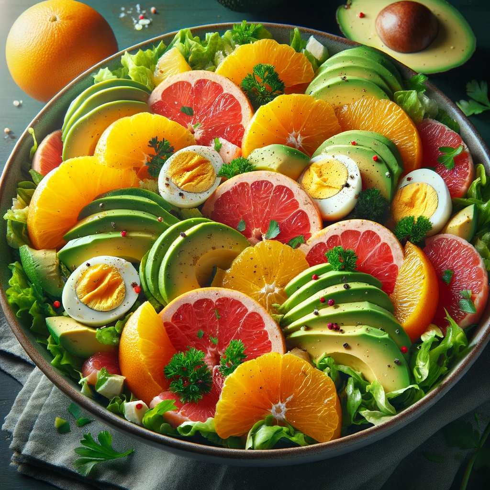

Avocado and Citrus Salad

Description
Are you in for a quick and nutritious recipe? How about a zesty Avocado and Citrus Salad? It combines several ingredients that are great for the follicular phase of your cycle. Here's how to make it:
Ingredients
- 1 ripe avocado
- 1 orange
- 1 grapefruit
- A handful of lettuce (Romaine or Boston)
- A few springs of parsley
- Optional: girlled chicken or boiled eggs for protein
- Dressing: Olive oil, vinegar, salt and pepper
Steps
- Prepare fruit and Veggies:
- Peel and slice the avocado.
- Peel and segment the orange and the grapefruit, removing as much of the whice pith as possible.
- Wash and chop the lettuce and parsley.
- Assemble the Salad:
- In a large bowl, place the lettuce at the bottom.
- Arrange the avocado, orange, and grapefruit segments on top.
- Sprinkle with chopped parsley.
- If you're adding chicken or eggs, slice them and place them on top.
- Dress the Salad:
- Drizzle with olive oil and vinegar.
- Season with a pinch of salt and pepper to taste.
- Serve and Enjoy:
- Toss gently to mix all the flavors.
- Serve immediately for the freshest taste.
This salad is not only quick and easy to prepare but also packed with nutrients suitable for the follicular phase of your menstrual cycle. The avocados are great for healthy fats, while the citrus fruits provide a refreshing and vitamin-rich addition. Enjoy!